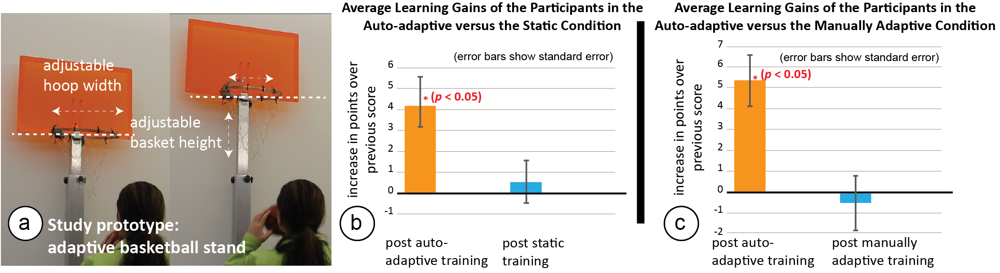
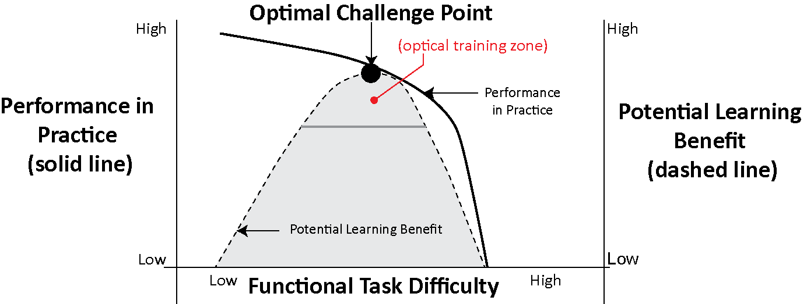
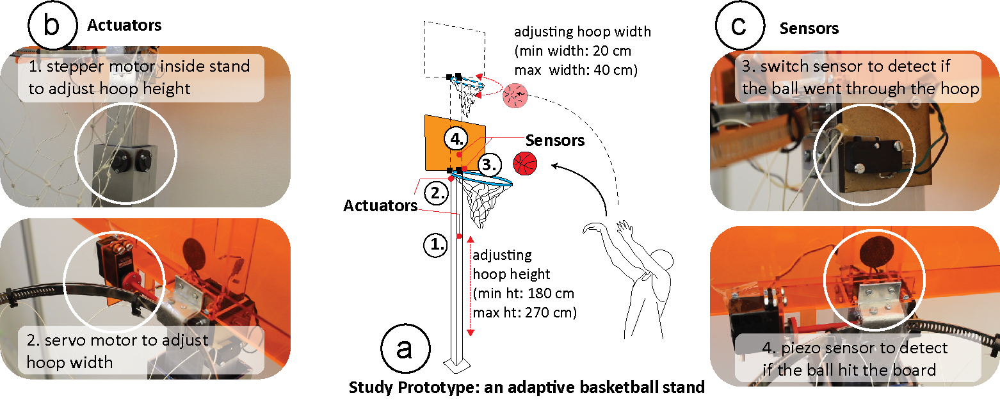

Publication
Dishita Turakhia, Yini Qi, Lotta-Gili Blumberg, Andrew Wong, Stefanie Mueller.
Can Physical Tools that Auto-adapt its Shape based on Learner's Performance Help in Motor Skill Training?
In Proceedings of
TEI ’21.
DOI PDF Video Talk Slides Video
DOI PDF Video Talk Slides Video
1 / 69

2 / 69

3 / 69

4 / 69

5 / 69

6 / 69

7 / 69

8 / 69

9 / 69

10 / 69

11 / 69

12 / 69

13 / 69

14 / 69

15 / 69

16 / 69

17 / 69

18 / 69

19 / 69

20 / 69

21 / 69

22 / 69

23 / 69

24 / 69

25 / 69

26 / 69

27 / 69

28 / 69

29 / 69

30 / 69

31 / 69

32 / 69

33 / 69

34 / 69

35 / 69

36 / 69

37 / 69

38 / 69

39 / 69

40 / 69

41 / 69

42 / 69

43 / 69

44 / 69

45 / 69

46 / 69

47 / 69

48 / 69

49 / 69

50 / 69

51 / 69

52 / 69

53 / 69

54 / 69

55 / 69

56 / 69

57 / 69

58 / 69

59 / 69

60 / 69

61 / 69

62 / 69

63 / 69

64 / 69

65 / 69

66 / 69

67 / 69

68 / 69

69 / 69

Can Physical Tools that Adapt their Shape based on a Learner's Performance Help in Motor Skill Training?

Figure 1. We investigate if adaptive learning tools that automatically adapt their shape to adjust the task difficulty based on a learner's performance can help in motor-skill training. To this end, we built (a) a study prototype in the form of an adaptive basketball stand that can adjust its hoop size and basket height. Our studies show that when the tool adapts automatically, training leads to significantly higher learning gains in comparison to training with (b) a static tool and (c) a manually adaptive tool for which the learners choose the difficulty level themselves.
Adaptive tools that can change their shape to support users with motor tasks have been used in a variety of applications, such as to improve ergonomics and support muscle memory. In this paper, we investigate whether shape-adapting tools can also help in motor skill training. In contrast to static training tools that maintain task difficulty at a fixed level during training, shape-adapting tools can vary task difficulty and thus keep learners' training at the optimal challenge point, where the task is neither too easy, nor too difficult.
To investigate whether shape adaptation helps in motor skill training, we built a study prototype in the form of an adaptive basketball stand that works in three conditions: (1) static, (2) manually adaptive, and (3) auto-adaptive. For the auto-adaptive condition, the tool adapts to train learners at the optimal challenge point where the task is neither too easy nor too difficult. Results from our two user studies show that training in the auto-adaptive condition leads to statistically significant learning gains when compared to the static (F_(1,11) = 1.856, p<0.05) and manually adaptive conditions (F_(1,11) = 2.386, p < 0.05).
Introduction
Research in HCI has shown that shape-adapting tools can support users in the execution of motor tasks by either helping users to perform the task correctly or by preventing users from making mistakes. For instance, actuated office furniture, such as a desk, chair, and monitor that adapt their position based on a user's body posture, can help users improve ergonomics [6,34]. Similarly, actuated kitchenware, such as an actuated knife, can prevent users from getting injured by automatically retracting the blade if the knife gets too close to the user's fingers [37]. While these systems show that shape-adaptation can help users with the execution of motor tasks, it is unclear if such automatically shape-adapting tools can also help train users for the underlying motor skills so that after fully acquiring the skill, users no longer need additional support when performing the motor task.
In our work, we investigate if physical tools that automatically adapt their shape can help users in motor skill training. In particular, we study how training with an automatically adaptive training tool compares against the current methods of training, which either use static or manually adaptive tools. Static training tools, such as a pair of fixed-height training wheels for learning how to ride a bike, do not allow the user to adjust the difficulty of the training. Manually adaptive training tools, such as height-adjustable training wheels, do allow to vary the difficulty level, but users have to first assess their own skill level to determine which difficulty setting leads to optimal training. In contrast, automatically adaptive training tools that can sense a user's performance and then adapt the difficulty level accordingly, have the potential to allow users to always train at what is called the optimal challenge point, where the task is neither too easy, nor too difficult for their skill level.
To study if automatically adaptive tools can indeed lead to larger learning gains, we built a study prototype in the form of a basketball stand with adjustable hoop height and width that works under three training conditions: (1) static, (2) manually adaptive, and (3) auto-adaptive condition. For the static training condition, the basketball stand is at a fixed hoop height and width, and thus the difficulty level does not change over time. For the manually adaptive training condition, users can adjust the difficulty level themselves by controlling the hoop height and width by activating the actuators (motors) on the stand. For the auto-adaptive training condition, the tool automatically varies the difficulty level by adjusting the hoop height and width based on the user's performance that is detected using sensors, such as a switch on the net and a piezo sensor on the board.
To determine when to adapt the study prototype in the auto-adaptive training condition, we use an adaptation algorithm that maintains the training difficulty at the optimal challenge point, at which the task is neither too difficult nor too easy for the users. We use the model of the optimal challenge point because studies in motor skill learning have shown that when coaches train learners at the optimal challenge point, learners have the maximum potential learning benefit [14]. To maintain the difficulty level at the optimal challenge point, the algorithm measures a users' performance and based on the performance over time, determines whether the tool should adapt to a more difficult setting, a less difficult setting, or remain at the current difficulty setting during the training.
To test if training in the auto-adaptive condition, in which users train at the optimal challenge point, leads to higher learning gains in motor skill training when compared to the static and manually adaptive condition, we conducted two user studies with 12 participants each. In the user study, we trained participants on the task of throwing a basketball into the hoop. We measured the participants' learning gains (i.e., increase in performance scores) after (1) training on the automatically adaptive tool versus the static training tool, and (2) training on the tool versus the manually adaptive training tool. Our study results show significant learning gains in the auto-adaptive training condition when compared to the static ($F_{1,11} = 1.856$, $p < 0.05$) and manually adaptive conditions ($F_{1,11} = 2.386$, $p < 0.05$). While we expected that the learning gains in the manually adaptive condition would also be substantial, we found that there was a mismatch between participants' skill levels and their own assessment of what task difficulty is best to train on, resulting in only small learning gains.
In this paper, we present MorphSensor, a 3D electronics design tool for designing electronic function in the context of a prototype’s three-dimensional shape (Figure 1). MorphSensor unifies electronic and physical object design in one 3D workspace as one complete workflow, which leads to better form and function integration. To add a sensor to a prototype shape, designers start by loading an existing sensor module. Upon import, MorphSensor automatically creates 3D models for the board and its electronic components, and creates airwire connections that represent the logic. Designers can then move each electronic component onto the desired location on the 3D prototype design and redraw the wires to route across the prototype surface. MorphSensor supports designer in this editing process by providing a range of custom support tools, including tools that help identify the main sensing components and tools that automatically re-position components on the prototype geometry to fit into the available space.
In addition to leading to higher learning gains, users also preferred training with auto-adaptive tools over training with static and manually adaptive tools. For instance, in user study 1, p11 said, \textit{`adaptive training makes each stage of the training experience more rewarding, so it helped me focus better’}, and in user study 2, p3 said, \textit{`auto-adaptive was easier to use; I didn't have to think about if I set it too easy or too hard.’}. Thus, based on the results of our user studies, we see a large potential for the use of automatically adaptive training tools in motor skill training, making personalized training accessible to a larger audience that may not have access to an expert trainer.
In summary, we contribute:
- A study prototype of an adaptive basketball hoop that enables training in three conditions: (1) static, (2) manually adaptive, and (3) auto-adaptive condition. In auto-adaptive condition, the physical tool automatically adapts to vary the task difficulty based on the learner's performance, so that the task difficulty is at the optimal challenge point for the learner.
- A study with 12 participants measuring the learning gains of training in the auto-adaptive training condition versus the static training condition with results showing significantly higher learning gains in the auto-adaptive condition ($F_{1,11} = 1.856$, $p < 0.05$).
- A study with 12 participants measuring the learning gains of training in the auto-adaptive training condition versus the manually adaptive training condition with results showing significantly higher learning gains in the auto-adaptive condition ($F_{1,11} = 2.386$, $p < 0.05$).
BACKGROUND ON VARYING TASK DIFFICULTY
A key component of auto-adaptive training tools is to determine when to adapt the tool so that the task difficulty level accommodates the learner's increase in skill level. One way to adapt the difficulty for a learner is by having them train around what is called the \textit{optimal challenge point} \cite{guadagnoli2004challenge}, which has been proven to lead to higher learning gains. Here, we first describe the relevant concepts and then detail how we translate these concepts into the design of our tool.
Task Difficulty
To understand how the task difficulty during training affects the learning of a motor skill, researchers have defined two types of task difficulties: \textit{nominal task difficulty} and \textit{functional task difficulty} \cite{guadagnoli2004challenge}.
Nominal Task Difficulty (Independent of the Learner)
Nominal task difficulty is the level of difficulty of the task independent of the person executing the task and their skill level. For example, in basketball, it is more difficult to score a basket that is mounted at a higher height and has a smaller width, than to score a basket mounted at a lower height and has a larger width, irrespective of the person performing the task. When learners transition from low nominal task difficulty (lowest difficulty setting: minimum height and maximum width) to high nominal task difficulty (highest difficulty setting: maximum height and minimum width), they transition from beginner to expert level. In our study prototype, the lowest nominal task difficulty is at a basket height of 180 cm and a hoop width of 40 cm, the highest nominal task difficulty is at a basket height of 270 cm and a hoop width of 20 cm.
Functional Task Difficulty (Dependent on the Skill Level of the Learner)
Functional task difficulty refers to how challenging the task is in \textit{relation to the person} executing the task and their skill level. For instance, when throwing a ball at a high basket, the task will typically be more difficult for a beginner with a low skill level than an expert with a high skill level. Thus, to keep both the beginner and the expert learner at the same functional task difficulty, i.e., challenged in the same way, a beginner would have to train at a low nominal task difficulty (e.g., 180 cm), while an expert would have to train at a high nominal task difficulty (e.g., 270cm). Note that the functional task difficulty for both learners would be the same. As can be seen in Figure \ref{fig:11}, functional task difficulty and performance in practice are correlated, for example, a lower functional task difficulty (i.e., an easier task) results in higher performance and vice versa.
Optimal Challenge Point
Research has shown that when the functional task difficulty is at a level that is neither too difficult nor too easy for the learner, it results in the highest potential learning benefit \cite{guadagnoli2004challenge}. This level of functional task difficulty is called the \textit{optimal challenge point}. Figure \ref{fig:11} (adapted from \textit{Guadagnoli et al.} \cite{guadagnoli2004challenge}) illustrates this concept in more detail: when the functional task difficulty is too low, i.e. the task is too easy, the learner's performance in practice is high (e.g., every single basket is scored in basketball), but the learner remains underchallenged and the potential learning benefit is low. Conversely, when the functional task difficulty is too high, i.e., the task is too difficult, the learner's performance in practice is low (e.g., no basket is scored), and the learner is overchallenged and thus this setup also fails to maximize the potential learning benefit. Therefore, to have the highest potential learning benefit, the functional task difficulty needs to be at a medium level, i.e., the task at hand should neither be too difficult nor too easy, which is reflected in a medium performance level in practice (e.g., some baskets are scored but not all). For instance, in our basketball scoring scheme, a learner trains around the optimal challenge point when their average score is around 50\%-75\% (see Table \ref{table:1}), i.e. some boards and some baskets are hit but not all.

Figure 2. The optimal challenge point is the level of functional task difficulty at which the task is neither too hard nor too easy, which allows for the largest potential learning benefit. Figure adapted from Guadagnoli et al.
Adjusting Task Difficulty to Maintain the Optimal Challenge Point
We explained above that to allow learners to progress efficiently from a beginner level with low nominal task difficulty to an expert level with high nominal task difficulty, learners need to train at a functional task difficulty set at the optimal challenge point at all times. We now describe how the algorithm accomplishes this using the following series of steps:
- Step 1. Monitoring Performance in Practice / Functional Task Difficulty: Next, the algorithm monitors the learner's performance by collecting data from the integrated sensors over time. The \textit{performance in practice} (Figure \ref{fig:11}) reflects the level of functional task difficulty that the learner is experiencing. In our work, we calculate the performance using the learner's average score over time. If the functional task difficulty is at a medium level, i.e. neither too difficult nor too easy, the learner trains in the zone around their optimal challenge point, reflected by a medium good score and therefore, our algorithm will keep the nominal task difficulty unchanged, i.e. the physical tool will not adapt. However, because learners' skills tend to improve with practice, which is reflected in an increase in the average score, the task will become too easy as the learner keeps training and the functional task difficulty will become too low, i.e. it will be below the optimal challenge point. In our work, as long as the learner's performance in practice is medium (50\%-75\% success rate on average), our algorithm maintains the current nominal difficulty level (see Table \ref{table:1}). If the score increases to >75\% success, we adapt to a higher nominal task difficulty level.
- Step 2. Increase Nominal Task Difficulty by Adapting the Tool: Once the performance in practice is high (functional task difficulty too low), our algorithm increases the nominal task difficulty by adjusting the tool. In our basketball example, the algorithm can increase nominal task difficulty by raising the stand and making the hoop smaller. Since the nominal task difficulty is now higher, the previously too low functional task difficulty will now be back at a higher level around the optimal challenge point, allowing the learner to train again with highest potential learning benefit. For instance, while a learner may have scored enough baskets to accomplish an average score of >75\% hits with the lower basket height and wider hoop, the new higher basket height and smaller hoop setting may drop their average score back to around 50\%.
- Repeat step 1 + 2 Until Highest Nominal Task Difficulty is reached (Expert Setting): Our algorithm repeats step 1 and step 2, i.e. monitoring performance in practice and increasing the functional task difficulty by adapting the tool, until the highest nominal task difficulty setting is reached. If the functional task difficulty is low at the highest nominal task difficulty, i.e. if the performance is high in the expert setting, the learner has fully mastered the skill.
STUDY PROTOTYPE
To be able to compare the training with (1) a static, (2) a manually adaptive, and (3) an automatically adaptive tool, we first built a study prototype that works across all three conditions. We first describe the choice of motor skill for the user studies, which determined the choice and design of the study prototype.
While a wide range of skills can be used to study motor skill learning, such as learning to ride a bike or to skateboard, we chose basketball as an example because the task of shooting balls into the hoop requires only a short amount of time (each shot takes around 3-4 seconds). This allows us to collect more data points in our user studies (220 shots per participant within an hour of study). In addition, a similar motor skill task of throwing balls into a basket on the ground has been previously studied in the field of motor skill learning \cite{kerr1978specific}. Hence, we selected the motor skill of throwing a basketball into a hoop as our study task.
Design of the Study Prototype
Figure 3a shows the design of the final study prototype of a basketball stand that we used for the three study conditions. The study prototype has an adjustable hoop height and width, i.e., the hoop can widen and tighten and the stand can raise or lower the hoop. It is mounted with: (1) actuators to adjust the hoop height and width (Figure 3b), and (2) sensors to detect when the ball hits the board or goes through the hoop (Figure 3c).

Figure 3. Study Prototype: (a) Our basketball stand with adjustable hoop height (min height: 180 cm, max height: 270 cm) and hoop width (min width: 20cm, max width: 40cm) is mounted with (b) actuators, i.e. a stepper and a servo motor for adaptation, and (c) sensors, i.e. a switch and a piezo sensor to detect if the ball went through the hoop or hit the board.
Actuators
To adapt the hoop height, we use a stepper motor (Figure 3b top) integrated with the base of the stand that lowers or raises the hoop. Similarly, to adapt the hoop width, we use a servo motor (Figure 3b bottom) integrated with the hoop that increases or decreases the hoop diameter. We chose the height adjustment as one dimension of adaptation because it also exists in manually adjustable commercial basketball setups and thus based our design on a real-life counterpart. We added a second dimension of adapting the task difficulty by adjusting the hoop width because wider hoops are easier to score with than smaller hoops. While hoop width adjustment is less common in commercial setups, it is used in motor skill training of basketball athletes where hoop variation has shown to improve free-throw performance when correctly adapted by a personal trainer \cite{khlifa2013effects}. Using these actuators, the basketball height and width can be adjusted continuously between a height of 180-270 cm and a hoop diameter of 20-40 cm, respectively. Thus, the lowest difficulty setting is with 180 cm hoop height and 40 cm hoop width, and the highest difficulty setting is 270 cm hoop height and 20 cm hoop width. For reference, the ball used for the user study had a diameter of 15 cm.
Sensors
We sense the learner's performance by detecting if the ball went through the hoop, hit the board, or completely missed. To sense if the ball went through the hoop, we use a switch sensor attached to the net of the hoop that gets activated when the ball goes through the hoop and pulls on the net (Figure 3c top). To detect if the ball hit the board, we use a piezo sensor (\textit{SEN-10293 from Sparkfun}) that detects the noise of the ball hitting the board, which is a reading above 100 units (Figure 3c bottom). If neither the switch is activated nor the piezo reading is above 100 units, we infer that the ball completely missed the basket. While there are many alternative ways to sense a learner's performance in basketball, such as monitoring the trajectory of the ball using a camera, finding the best sensing mechanism was not the focus of our work and we therefore kept the sensor choices at a level sufficient for detecting performance.
Using these sensors, our prototype can sense three performance outcomes, which are in order from most to least successful: basket scored, board hit, and completely missed.
Using the Study Prototype for all three Study Conditions
Next, we explain the three study conditions and describe how our study prototype supports each of these conditions:
- In the static condition, the difficulty level is fixed and thus the prototype does not adapt during training. Therefore, no actuation of the tool or sensing of the user's performance is needed.
- In the manually adaptive condition, participants are in control of which difficulty level they want to train on. We provide participants with a keyboard to control the actuators to adjust the hoop width and the hoop height as desired. Thus, this condition requires actuation but does not require sensing of the user's performance.
- For the auto-adaptive condition, our adaptation algorithm controls the difficulty level. To provide the adaptation algorithm with data on the user's performance, the switch and piezo sensors embedded in the study prototype are used to determine if the ball missed the hoop, hit the board, or successfully went through the hoop. Based on the performance data, our algorithm then determines if the actuators need to adapt the tool to the next difficulty level. Thus, both sensors and actuators are required for this condition. In addition, to determine when to use the actuators to adjust the task difficulty, the auto-adaptive condition also requires an algorithm that computes the training task difficulty level. We provide more information on how to determine optimal task difficulty in the next section.
USER STUDY 1: STATIC V/S AUTO-ADAPTIVE TRAINING TOOLS
In our first user study, we compare the learning gain and training experience of training with a static tool versus an automatically-adaptive tool. We base our user study on a previous study in motor skill learning that investigated fixed practice versus varied practice in which a personal trainer adjusted the training, and showed that varied practice leads to a larger learning gain \cite{kerr1978specific}.
USER STUDY 2: MANUALLY ADAPTIVE V/S AUTO-ADAPTIVE TRAINING TOOLS
For our second study, we investigated if automatically adapting the training tools also leads to higher learning gains when compared to manually adaptive training tools, i.e. when the learners have the choice to adjust the difficulty level according to their preference.
DISCUSSION
We showed that automatically adapting physical tools that vary task difficult are effective for motor skill learning as they maintain the training at the optimal challenge point for the learners. We now discuss benefits and limitations of our work.
Scaling Personalized Training of Motor Skills: As mentioned at the beginning of this paper, one of the main motivations for building automatically-adaptive tools for motor skills learning is that they allow to scale-up personalized learning of motor skills and make it available to a larger audience that does not have access to personal trainers. While we did not compare our automatically-adaptive tool to learning with a personal trainer, we did provide evidence that our approach leads to significantly higher learning gains when compared to conventional training tools, such as static and manually adaptive tools, that are currently used by learners who do not have access to a personal trainer.
Extending to Other Motor Skills and Tools: While in this paper, we were only able to study one particular adaptive tool, our work can be replicated to study additional tools in the future. For instance, the adaptation algorithm generalizes across different types of tools as long as they have sensors to measure a user's performance and actuators to adapt the difficulty level of the tool. Similarly, while the hardware of our tool, i.e. the particular sensors and actuators, are necessarily specific, we outlined the general requirements that study prototypes need to fulfill to work across all three conditions. We hope that our work can lay the foundation for the study of a variety of adaptive training tools, which will allow researchers to gather more evidence of the effectiveness of adaptive training tools for motor skill training.
Longitudinal Studies with Diverse Participants: While the insights from our study are promising, more longitudinal studies with more varied populations are needed before we can draw conclusions on long-term learning gains. Our study focused on only one adaptive training tool and more studies are needed to confirm the results across a broader set of different tools in different application domains. Furthermore, additional studies need to be conducted to study specific aspects of the skills, such as variation in throwing angle and throwing distance.
Improvements for the Auto-Adaptation Algorithm: In our work, we discussed the discrete vs. running average approach and an additional derivative check to calculate the user's performance over time which we then used to determine when to adjust the difficulty level for training. However, several other approaches can be used to determine when to adapt the tool. For instance, by adding a hysteresis value to the algorithm, we can further enhance our algorithm to only adapt the tool when the performance is at a certain value for a long period of time. Such a hysteresis value can prevent unwanted frequent switching between states when performance fluctuates around the optimal challenge point. In addition, our algorithm currently uses a fixed increase for the adaptation. For future work, we plan to determine not only when to adapt the tool but also how much to adapt it based on the user's performance.
CONCLUSION
In this paper, we showed that automatically adaptive tools that vary task difficulty based on a learner's performance, can indeed help in motor skill training. Using our study prototype and the adaptation approach of the optimal challenge point, we demonstrated that training in an auto-adaptive condition leads to higher learning gains when compared to training in a static or manually adaptive condition. We showed that the experience of training in the auto-adaptive condition is also more enjoyable for learners since it removes the decision making process around which difficulty level to train on and provides feedback to the learner in the form of the shape-adaptation of the tool. For future research, we plan to build a toolkit that helps designers build their own adaptive training tools. Lastly, we also plan to combine the shape-adaptation with multi-modal feedback and study the combined learning effect.
For future work, we plan to implement more complex PCB editing functionality into our system, such as multi-layer PCB boards and additional design support tools.
ACKNOWLEDGMENTS
This material is based upon work supported by MIT Learning Initiative and the National Science Foundation under Grant No. 1844406.